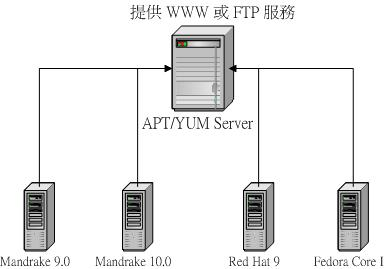

| |
最近更新日期：2004/06/23
|
用不惯 Tarball 安装套件却又担心
RPM 的属性相依问题吗？如果有一种套件管理工具可以克服 RPM 属性相依的方法该有多好！有没有这种工具？呵呵！有的，那就是
APT 与 YUM 这两个服务器了。APT (Advanced Package Tool) 是由 debian
这个 distribution 所发展的一个套件管理工具，其目的在克服 RPM 套件的属性相依问题，让用户可以透过
APT 的分析直接安装/升级/删除相关联的套件喔。另一个很好用的就是 YUM (Yellow
dog Updater, Modified) 这个咚咚，他是由 Duke University 所发起的计划，目的则与
APT 相似，都是在克服 RPM 的属性相依问题，方便用户进行套件的安装、升级等等工作。由于
APT/YUM 这一类的服务器在『系统升级/管理』上面的功能发挥的很好，所以目前很多的
distributions 都把这两个服务器作为预设的服务喔。在这个章节当中，我们要介绍如何在您的
Linux 服务器上面建置一个 ATP 或 YUM 服务器，并且提供更新的 RPM 套件给 Client
端来使用！
|
 前言： 前言：
如果您曾经自行安装过某些套件的话，那么您或许会觉得：『RPM
是比 Tarball
好安装没有错啦，但是每次为了解决套件之间的属性相依问题，真的是很烦，尤其是
RPM 档案在不同的操作系统版本之间也无法兼容！』是的！没错！为了要解决这个套件之间的属性相依问题，又要保留
RPM 套件的易安装与查询的特性，所以就有一些套件管理方法出来啦！比较有名的就是
APT 与 YUM 这两个咚咚啦。(注：当然，Mandrake 的 urpmi 也是很棒的工具。)
甚么是
APT/YUM 呢？他们如何运作？
众所皆知的， RPM 是目前 Linux 世界里面用的最多的套件安装方式。不过，由于
RPM 所管理的套件在安装的时候必须要考虑到不同套件之间的相依性，这在系统管理员处理系统的升级/更新上面是很讨厌的！为了克服这个问题，所以有
APT/YUM 之类的计划出来。APT ( Advanced Package Tool ) 最早是由 debian
这个 distribution 所发展出来的，而
YUM
( Yellow dog Updater, Modified ) 则是由 Duke
University 所发起的计划之一，这两者的目的都是『为了要解决安装
RPM 套件时的属性相依问题！』，而不是额外再建立一个套件安装模式喔。首先，我们谈一谈为甚么
RPM 套件会有属性相依的问题？又，甚么是属性相依的问题啊？
-
属性相依的问题大多来自于函式库的引用，举例来说，我们前面 SSH
与 Telnet 服务器章节中提到的 SSH 服务器需要使用到 SSL 这个套件的加密机制，所以自然就需要
SSL 的函式库，这个时候，如果您没有安装 SSL 的话，那么 SSH 就不会让您安装了！这就是属性相依的问题啦。也就是说，当我们要安装
A 套件，结果 RPM 套件管理员告诉你还需要 B 套件，而安装
B 套件时，却又发现还缺少 C 套件～真是环环相扣啊！讨厌死了～
-
要知道某个套件的最低要求是哪些套件时，可以使用 rpm
-qR packagename ，至于某个套件提供哪些档案则可以使用
rpm
-q --provides packagename 。这些信息都纪录在
RPM 套件里面。
如果对于 RPM 还有疑问，请参考基础学习篇的
RPM
与 SRPM 那个章节啰。好了，既然每一个 RPM 套件的标头 (header)里面都会纪录该套件的属性相依关系，那么如果我们可以将该标头的内容纪录下来并且进行分析，不就可以得知每个套件在安装之前需要额外安装哪些基础套件吗？也就是说，我们在服务器上面先以分析工具将所有的
RPM 档案进行分析，然后将该分析纪录下来，只要在进行安装或升级时先查询该纪录的档案，就可以知道所有相关联的套件档案！没错！是这样。他的整个运作流程有点像这样：
服务器端：
-
首先，在 APT/YUM 服务器上面放置了所有的 RPM 套件(这包括来自原版光盘与供货商发行的升级套件)；
-
然后以相关的功能去分析各个 RPM 档案的相依性，这些纪录可以解决所谓的属性相依问题，然后将这些数据记录成档案存放在服务器的某特定目录内；
客户端：
-
Client 端如果需要安装/升级/删除某个程序时，会先下载服务器上面记载的属性相依档案(利用的协议则是
WWW 或者是 FTP)；
-
经由比对服务器端传来的纪录数据进行分析，然后取得所有相关的套件，一次全部下载下来进行升级安装。
如此一来则克服了属性相依的问题啰！是的！就这么简单啊！整个图示如下：

图一、APT/YUM 服务器的架构。
您的 APT/YUM 服务器上面可以拥有多个版本的 Linux distributions 的 RPM
套件，并且需要提供 WWW/FTP 等服务，而 Client 端则是藉由主机的 WWW/FTP 等协议来进行
RPM 档案的取得喔。
是否需要架设
APT/YUM 服务器
APT/YUM 的功能也只是在管理 RPM 套件而已，只是他比单纯的 RPM 指令要好的地方在于他克服了属性相依的问题，所以客户端可以很方便的进行安装/升级与移除的动作。那么是否意味着我就得要架设
APT 或 YUM 服务器呢？
这可不一定吶。如果您只有一部主机，而且上面的网络服务很少，并且也没有提供甚么重要的服务，那么架设
APT/YUM 服务器就没有这么需要了。为甚么呢？因为很少用到 APT 的机制啊，而且直接找网络上面有的
APT/YUM 服务器即可，无须架设啦！要注意的是，架设 APT/YUM 服务器时，您必须要有够用的硬盘空间、够用的带宽以及提供至少
WWW 或者是 FTP 的网络服务呢！这对只有一部主机的您来说，真的不必要费心思去管理的啦！但如果您的网络环境是如下的模样，可能就得要架设一部
APT/YUM 服务器比较好啰！
-
您的网络里面有相当多的同样版本的 Linux distribution
系统；
-
您的局域网络对外带宽不高，且内部有多部 Linux 主机系统；
-
您的 Linux distributions 在国内并没有相对应的 APT/YUM
服务器提供服务，而对国外联机的带宽又很低时；
也就是说，如果您拥有多部 Linux 主机，或者是您连接到 APT/YUM 服务器的带宽太低时，就可以考虑架设
APT/YUM 服务器了。以上面图一来说，如果您的连外网络带宽太低，那么架设一部
APT/YUM 服务器后，所有的 Linux 是连接到该部 APT/YUM 服务器进行升级/安装，速度当然比连外要快很多啦！
所以说，如果您是上层的系统管理员(例如学校的网管老师或者县网、区网的网管人员)，为了您的整个网域的
Linux 主机来打算，那么架设 APT/YUM 是蛮需要的，因为真的可以节省很多连外的带宽；相反的，如果您是一般用户，拥有的了不起就是两三部
Linux 主机而已，那么似乎没有架设 APT 主机的必要性呢！因为由上面的说明来看，架设
APT 主机所需要的『硬盘空间』可是不能省的，对于一般的用户来说，架设
APT 主机实在是没有什么必要性说～
架设之前，您所需要启用的服务
就如同前面的说明，您要架设 APT/YUM 时，请先记得在您的
APT/YUM 主机上面启用 WWW 或者是 FTP 服务了才行！因为 APT/YUM 是利用
WWW/FTP 来进行 RPM 档案在 Server 与 Client 之间的传送的！此外，您的 APT/YUM
主机上面最好将最靠近您主机的 Linux 版本更新套件的网站设定为映像站台 ( mirror
)，如此一来，您就可以让系统自动的更新您的 Linux distributions 所需要的更新档案，而不必手动来更新呢！
此外，由于完整的 APT/YUM 服务器包含了原本的 Linux distributions 的原版光盘内容，所以需要的硬盘空间是很高的！至少需要
3~5 GB 以上，最好能够有 10GB 以上的硬盘空间。
好了，底下我们就来开始安装与设定 APT/YUM 服务器吧！
APT 服务器：
底下开始来谈一谈 APT 服务器吧！
APT
服务器利用的机制
就如同前言说明的， APT 主机可以将已经存在的 RPM 档案进行分析，并且将各个套件的相关系记录下来，以便让用户依据这个套件的相关性纪录档案来更新与安装他们的
Linux 系统。那么这些档案放在哪里呢？其实因为这些档案被需要让 Client 端可以下载，而且
APT 并不是额外再启用其他的 port ，而是透过 WWW 或者是 FTP 的方式来让 Client
端下载的，所以 APT 的 RPM 档案当然就需要放在可以让
WWW 或者让 FTP 来存取的目录啰！
在很多 Linux distributions 的 WWW 预设主页是放在 /var/www/html 这个目录下的(
例如 Red Hat 9, Fedora Core I/II, Mandrake 等等 )，所以，除非您想要自行架设虚拟主机，或者是利用链接档的方式来让
RPM 档案放置的目录可以让 WWW 读取，否则您都应该要将 APT 管理的 RPM 档案放置在
/var/www/html 底下。假设我有两个 Linux 的版本要这部 APT 主机管理时，一版是
Mandrake 9.1 一版是 Red Hat 9 ，那么我可以这样编排我的 RPM 档案放置的目录：
表一、APT
主机相关 RPM 档案放置的目录示意表
/var/www/html/apt/redhat9
|--RPMS.os
|--RPMS.updates
|--SRPMS.os (非必备目录)
|--SRPMS.updates (非必备目录)
`--base
|--pkglist.os.bz2
|--pkglist.updates.bz2
|--release
|--release.os
`--release.updates
/var/www/html/apt/mdk9.1
|--RPMS.os
|--RPMS.updates
|--SRPMS.os (非必备目录)
|--SRPMS.updates (非必备目录)
`--base
|--pkglist.os.bz2
|--pkglist.updates.bz2
|--release
|--release.os
`--release.updates |
如上所示，我独立出一个名为 apt 的目录来管理我的 APT 档案，另外，因为有两个版本，所以我将
apt 又分为两个目录，因为两个目录的格式一样，所以我以 Red Hat 9 那个 /var/www/html/apt/redhat9
目录来介绍。里面至少会有三个目录才对，分别是 RPMS.os, RPMS.updates, base
这三个目录，其中：
-
RPMS.os 的内容为 Red Hat 9 的原本光盘中的 RPM 档案(i386)；
-
RPMS.updates 的内容为 Red Hat 公司针对 Red Hat 9
这一版所释出的修补套件；
-
base 这个目录里面的数据则是由 APT 服务器所自动产生的，前面我们提到的
APT 会去分析 RPM 档案而将档案信息记录下来，记录下来的咚咚就是放置在这个目录下的啦！
您还会看到其实还有 SRPMS.os 以及 SRPMS.updates 等目录，呵呵！那个就是
Source RPM (SRPM) 档案放置的目录了。因为我们直接可以透过 Binary 来升级，所以我预设不放
SRPM 在我的 APT 服务器里面啰！
OK！所以我们需要怎么来架设我们的 APT 以及利用 APT 来升级呢？
-
先将所有来自 Linux 原版光盘的 RPM 档案复制到 /full/path/RPMS.os
档案中；
-
再将来自原 Linux 版本公司释出的 RPM 修补套件由 Internet
下载到 /full/path/RPMS.updates 当中；
-
利用 APT 的功能进行 /full/path/base 这个目录里面信息的更新；
-
到 Client 端上面，以 APT 的功能更新 Client 自己的套件信息，使与
APT 主机的 /full/path/base 这个目录里面的套件记录信息同步化；
-
到 Client 端上面，可以利用 APT 的功能来更新或者是安装套件了！当然，所使用来下载
RPM 档案的协议当然是 WWW 或是 FTP 啰！而且， Client 端分析的是自己的 RPM
信息喔，所以每次进行更新之前，应该将 Client 端的 RPM 信息与 APT Server
端来同步化才行！否则 Server 新增的档案在 Client 端是无法取得信息的喔！
所以啰，其实在 APT 主机设定上面最重要的步骤应该是在于主机硬盘的规划、档案的复制与
updates 档案的随时自动更新(可以利用映像站台的功能)，以及 /full/path/base
目录下的信息更新等等步骤！只要这边没有问题，其他的流程就简单咯！
安装
APT 软件
因为 APT 这套件是挺大的，而且也不容易使用 Tarball 来安装，所以比较建议使用
RPM 的方式直接安装，您可以到底下的网站搜寻一下属于您自己的 Linux distributions
的 APT 版本喔：
同时我也将一些常见的版本捉下来了，您也可以在这里下载：
RPM 的部分：
SRPM 的部分(可以使用 Red Hat 9 提供的 SRPM 来进行重新编译)：
直接以『 rpm -ivh package.name
』就能安装了！当然，需要选择适合您的版本吶！如果找不到适合您的版本，那么尝试以上面提供的
SRPM 来重新编译试看看能不能成功吧！『rpm
--rebuild SRPM 』或新版的『rpmbuild
--rebuild SRPM』(注：SRPM 表示您由上面下载的 apt-0.5.5cnc6-fr1.src.rpm
这个档案的档名)。
APT
服务器的套件结构
-
配置文件案：
-
/etc/apt/apt.conf：这个并不是
APT Server 的记录文件，而是当我们在指令列模式下达 APT 的指令时 (如底下执行档部分会介绍的
apt-get )，该指令的环境参数。一般来说，使用默认值就可以了！不需要更动他。这个档案的内容当中：
批注符号为两个斜线( slash
)：『//』
主要至少分为三大群组，分别为
APT(环境参数), Acquire(下载相关参数) 与 RPM(RPM相关参数)，而每个群组之内又分别具有多个参数，每个参数的设定值最后以分号『;』隔开，例如下面的范例：
[root@test
root]# vi /etc/apt/apt.conf
APT //第一个大群组
{
// Options
for apt-get
Get //第一个大群组里面的第一个参数
{
Download-Only "false"; //第一个参数的项目与该项目之设定值
Show-Upgraded "true"; //第二个参数的项目与该项目之设定值
};
}; |
除了上面的格式外，也可以利用底下的格式来进行设定：
主群组::参数::项目 "设定值";
例如上面的范例中，可以将第一个设定值写成：
APT::Get::Download-Only
"false";
另外，如果您想要使用 Proxy 来加快您的网络传输时，可以修改里面的内容，因为
Proxy 是在 Acquire 里面的 Http 参数，所以您可以使用如下的设定值(注：我以成大的
proxy.ncku.edu.tw:3128 为例)：
1. 利用原本的设定技巧：
[root@test
root]# vi /etc/apt/apt.conf
// 找到底下的参数
Acquire
{
//
底下加入这些数据：
Http
{
Proxy "http://proxy.ncku.edu.tw:3128";
};
Retries
"0";
};
2. 或者您也可以改用底下的参数设定：
[root@test
root]# vi /etc/apt/apt.conf
//在最后一行加入，注意，不要被括号
{} 括住了！
Acquire::Http::Proxy
"http://proxy.ncku.edu.tw:3128"; |
上面两种方法都是行的通的啦！
-
/etc/apt/sources.list：这个档案就真的重要了！此档案的作用在于『选择适合您的
APT 主机』啰！所以这个档案与 Client 的关系比较大。内容有点像这样：
[root@test
root]# vi /etc/apt/sources.list
# Red Hat Linux
9
rpm http://ayo.freshrpms.net
redhat/9/i386 os updates freshrpms
#rpm-src http://ayo.freshrpms.net
redhat/9/i386 os updates freshrpms
# 里面料的格式为：
# rpm <APT服务器地址>
<相对于服务器的路径> <目录一> <目录二> <目录三> ...
# 以上面的例子来说，事实上
RPM 放置的目录在：
# http://ayo.freshrpms.net/redhat/9/i386/RPMS.os
# http://ayo.freshrpms.net/redhat/9/i386/RPMS.updates
# http://ayo.freshrpms.net/redhat/9/i386/RPMS.freshrpms
# 而至于 rpm-src
则是放置 SRPM 档案的服务器与目录喔！ |
如果您是由鸟哥面推荐的 RPM 安装您的 APT 时，这里可以保持默认的路径，不过，如果您知道台湾地区有更快速的映射站台，这里就可以修改成您所找到的
APT 服务器啰。
-
执行档案：
-
apt-get：这个是最主要的执行档了！大部分的时候都是给
Client 端用的，语法如下：
[root@test
root]# apt-get <options> <更新项目>
<套件名称>
参数说明：
options：关于参数有底下几个较常见的：
-q 不要显示
apt-get 运作时的输出讯息，安静一点比较好吗？！ ^_^
-y 如果
apt-get 在工作过程中需要使用者响应，这个参数可以直接回答 yes
更新项目：更新的动作有底下几个：
update：这个动作很重要，就是我们上面有提到的，Client
端要更新与 APT Server
套件相关性档案的清单对应表，就得要使用这个项目了！基本上，
每次进行
apt-get 来下载 APT Server 的档案前，最好都先 apt-get update
install：安装某个套件，后面接套件名称
dist-upgrade：自动升级我们系统上面已经安装的所有
RPM 套件喔
clean：将下载自
APT 主机的的 RPM 档案删除哩！
remove：移除已经安装在我们系统的某个套件！
范例：
[root@test
root]# apt-get update
# 将 RPM 档案相关性清单更新！
[root@test
root]# apt-get install tcpdump #
安装 tcpdump 这个套件
[root@test
root]# apt-get -y dist-upgrade #
升级我们系统上面的所有 RPM 套件
[root@test
root]# apt-get clean
# 至于每日更新的话，可以写入
/etc/crontab 喔
[root@test
root]# vi /etc/crontab
40 5 * * *
root apt-get update; apt-get -y dist-upgrade ; apt-get clean |
-
genbasedir：我们在前言的部分一再地提到
APT Server 会分析已经存在的 RPM 档案的属性相关性，并且会将属性的结果放置在
/full/path/base 那个目录内～呵呵！其实该动作很简单的，就是使用这个 genbasedir
即可！
-
相关目录：
-
/var/cache/apt：一些记录档案的地方，例如当使用
apt-get update 之后，这个目录下的 RPM 档案相关系记录文件就会更新了！
/var/state/apt：这个则是
apt 在工作的时候，一些状态的纪录档案放置的地方！
APT
服务器设定 ( 以 HTTP 提供服务为例 )
在底下的例子当中，我们主要是设定以 HTTP 为 APT Server 的服务提供商，因为是利用预设的
WWW 系统版本，所以首页在 /var/www/html。鸟哥在 /var/www/html 底下建立一个名为
apt 的目录，并在底下提供 Red Hat 9 与 Mandrake 9.1 的 APT 套件服务功能，注意，我默认仅提供
RPM 档案，并不提供 SRPM 的档案喔！相关的目录如前面提到的表一所示(注：当然
SRPM.os... 等档案就不必建立了！)。好了，那么就来给他安装 APT Server 相关的流程吧！
-
建置所需的目录与复制所需的档案：
如上面提到的 表一 所示为我们所需要的目录，而在每个
RPMS.os 为系统原本的光盘里面的档案，而 RPMS.updates 则为套件升级版本。我这里主要以中山大学的
FTP 网站作为主要的 update 数据源，使用的是 ncftp 的下载方法：
1. 建置所需目录：
[root@test
root]# mkdir -p /var/www/html/apt/redhat9/RPMS.os
[root@test
root]# mkdir -p /var/www/html/apt/redhat9/RPMS.updates
[root@test
root]# mkdir -p /var/www/html/apt/mdk9.1/RPMS.os
[root@test
root]# mkdir -p /var/www/html/apt/mdk9.1/RPMS.updates
2. 利用原版
CD 来复制所需的 .os 的 RPM 档案
[root@test
root]# cd /var/www/html/apt/redhat9/RPMS.os
# 先放入 Red
Hat 9 的原版光盘片
[root@test
RPMS.os]# mount /dev/cdrom
[root@test
RPMS.os]# cp /mnt/cdrom/RedHat/RPMS/* .
[root@test
RPMS.os]# umount /dev/cdrom
# 重复上面的步骤，将三片
i386 的 RPM 档案都复制进去！
# 至于 Mandrake
的原版光盘复制方法也是相同的步骤！
3. 利用 ftp.nsysu.edu.tw
来下载所需要的 RPM 档案
[root@test
RPMS.os]# cd /var/www/html/apt/redhat9/RPMS.updates
[root@test
RPMS.updates]# ncftp \
> ftp://ftp.nsysu.edu.tw/Linux/RedHat/linux/updates/9/en/os/i386/
NcFTP 3.0.2
(October 19, 2000) by Mike Gleason (ncftp@ncftp.com).
Connecting
to 140.117.11.7...
====================================================================
欢迎光临【国立中山大学】文件服务器
: FTP.NSYSU.edu.tw
Welcome to National Sun Yat-Sen University FTP Server.
右列网址提供本站档案搜索引擎
http://ftp.nsysu.edu.tw/
File Search Engine on the URL http://ftp.nsysu.edu.tw/
目前
FTP 部份有 313 人正在在线，最高限制 5000 人.
There are currently 313 users out of 5000 possible.
====================================================================
Only anonymous
FTP !!!! Please press [ENTER] key.
Logging in...
========================================================================
!!!!
Important Function !!!! (重要功能介绍)
o 'cd
key*word' or 'cd prefix*' or 'cd *suffix' provided (case-insentive).
(例：cd freebsd 可以打成 cd fr 或 cd *sd 或 cd f*e*d 都通用，大小写都行)
========================================================================
请多多利用
<A HREF="http://ftp.nsysu.edu.tw">http://ftp.nsysu.edu.tw</A>
可以使用方便的档案搜索引擎喔!!!!!!!!!!!!!!!!!
========================================================================
ADM.Email:
ftpadm@cc.nsysu.edu.tw
Anonymous user
(163.28.112.1) logged in
Logged in to
ftp.nsysu.edu.tw.
Current remote
directory is /pub/Linux/RedHat/linux/updates/9/en/os/i386.
ncftp ...x/updates/9/en/os/i386
> mget *
..... |
利用上面的步骤就可以将 Red Hat 9 的两个目录下的 RPM 档案放置完毕！至于
Mandrake 9.1 的方法与 Red Hat 9 是完全相同的！请您依照上面的方法来自行安装
Mandrake 到您的系统当中喔！另外，除了中山大学提供的 FTP 网站之外， 您也可以使用淡江大学或者是其他的大专院校提供的
FTP 服务喔！
淡江大学的 FTP 网站： ftp://ftp.tku.edu.tw/OS/Linux
中山大学的 FTP 网站： ftp://linux.cdpa.nsysu.edu.tw
-
建立 RPM 所在档案的相关数据：
建立好了档案之后，再来则是需要进行这些 RPM 档案的相关系分析了，分析方法很简单，只要一个动作即可：
[root@test
root]# genbasedir <最上层目录> <相对目录一>
<相对目录二> ...
参数说明：
最上层目录：以我们的
APT 主机为例，最上层目录有两个，分别就是：
/var/www/html/apt/redhat9
/var/www/html/apt/mdk9.1
相对目录一：那就是
RPMS.os 与 RPMS.updates ，但是记得 RPMS 不要写，
只要
os 以及 updates 即可！
范例：
[root@test
root]# genbasedir /var/www/html/apt/redhat9
os updates
Creating base
directory... done
Components:
os updates
Processing
pkglists... os updates done
Processing
srclists... done
Creating component
releases... os updates done
Creating global
release file... done
Appending MD5Sum...
os updates done
All your base
are belong to us!!!
[root@test
root]# genbasedir /var/www/html/apt/mdk9.1
os updates
# 动作真是给他有点久～耐心等候吧！
^_^ |
进行完上面两个动作后，APT 就会在您的系统上面主动的建立起 /var/www/html/apt/redhat9/base
以及 /var/www/html/apt/mkd9.1/base 这两个目录啰！这也是最重要的目录咯！基本上，
APT
Server 到这一步骤就已经完全 OK 了！其他的就是 WWW 服务器的设定啰，因为前面我们已经介绍过
WWW
了，这里不再重复说明说！
-
建立 Client 所需要的 sources.list
我们的 Red Hat 9 所架设的 APT Server 当然也可以让我们自己来升级了！这个时候请您修改
/etc/apt/sources.list
呢！请注意喔！您所选择的 APT Server 需要设定正确才行喔！
[root@test
root]# vi /etc/apt/sources.list
# 这是我们主机的
Red Hat 9 范例：
rpm http://192.168.1.2
apt/redhat9 os updates
# 这是 Mandrake
的范例
# rpm http://192.168.1.2
apt/mdk9.1 os updates
[root@test
root]# apt-get update
Get:1 http://192.168.1.2
apt/redhat9 release [543B]
Fetched 543B
in 0s (1359B/s)
Get:1 http://192.168.1.2
apt/redhat9/os pkglist [420kB]
Get:2 http://192.168.1.2
apt/redhat9/os release [121B]
Get:3 http://192.168.1.2
apt/redhat9/updates pkglist [55.1kB]
Get:4 http://192.168.1.2
apt/redhat9/updates release [126B]
Fetched 475kB
in 8s (57.0kB/s)
Reading Package
Lists... Done
Building Dependency
Tree... Done
# 这个步骤在测试我们上面的
sources.list 是否正确！
# 并且可以同时更新我们
Client 端的 RPM 属性档案记录！
# 要出现上面的讯息才对，如果出现错误讯息，很有可能是
WWW 设定错误！ |
这里特别说明的是， apt-get update 的作用在『取得
APT Server 的各个 RPM 档案的相关性，亦即是 base 目录里面的档案』，取得这些数据后，未来您的
Linux 主机要进行各项安装/升级动作时，就可以直接取用自己的纪录文件了。所以，如果主机上面更新了
base 里面的信息，则您必须要再次的执行 apt-get update 才行，否则主机上面更新的数据您将无法取得。
-
定期建立 update RPM 档案的映像数据，并更新 RPM 相关数据
其实到上一步骤所有 APT 相关的作业应该就已经完成了，不过，要晓得的是，
Internet 上面的 update 套件是随时在更新的，所以我们的 APT server 上面的
RPMS.updates 目录也应该要随时更新才对啊！要更新，您可以使用手动的方式来下载，用
ncftp 似乎不错！不过，毕竟不太适合实时更新，这个时候，我们可以利用映射
(mirror) 的方式来进行更新喔！我们以 Red Hat 9 的 update 来进行说明！关于映射的说明请您自行参考
http://mirrordir.sourceforge.net/
，我们这里仅需要应用而已喔！
1. 先在线安装
mirror 吧！
[root@test
root]# rpm -ivh \
>
http://mirrordir.sourceforge.net/mirrordir-0.10.49-1.i386.rpm
2. mirrordir
的语法
[root@test
root]# mirrordir <来源网址> <目标目录>
[root@test
root]# mirrordir -v \
> ftp://ftp.nsysu.edu.tw/Linux/RedHat/linux/updates/9/en/os/i386/
\
> /var/www/html/apt/redhat9/RPMS.updates
# 用 -v 来察看一下
mirrordir 的检查状态，如果以 cron 来进行时，就不需要了！
3. 定期进行映像并且同时更新
RPM 档案相关性：
[root@test
root]# vi /etc/crontab
# 加入这一行：
30 5 * * *
root mirrordir ftp://ftp.nsysu.edu.tw/Linux/RedHat/linux/updates/9/en/os/i386/
/var/www/html/apt/redhat9/RPMS.updates && genbasedir /var/www/html/apt/redhat9
os updates
# 注意喔！上面为连续的一行啊！
^_^ |
如此一来，我们的 APT 主机不但能够自己更新自己与
FTP 映像站的 update 数据，并且同时更新 APT 的 base 目录下的相关性档案喔！而您的
APT Client 就可以随时来更新他的 RPM 套件啰！ ^_^
Client
端的设定
无论是 APT Server 或者是 APT Client ，要使用 APT 服务器的功能，您都必须要安装
APT 软件才行。所以，首先请将您的 Client 依据前面『安装
APT 服务器软件』章节进行 apt 的安装；安装完毕之后，最重要的就是修订
/etc/apt/sources.list
这个档案啰！您必须要设定正确的 APT 服务器才行，如此一来，您就可以运用 APT
的强大功能啦！更多的使用技巧请参考
Linux
网络套件升级 章节。
YUM 服务器
谈完了 APT 服务器之后，接下来我们就来谈一谈目前被 Red Hat 及
Fedora 列为预设的 RPM 套件安装/升级机制的 yum 这个服务器啦。
YUM
服务器利用的机制
与 APT 类似的， yum 并没有开发新的网络传输机制，同样仅是利用原本主机就提供的
WWW 或者是 FTP 服务，来让 server/client 进行档案的传输。所以在您 yum 服务器上的
RPM 档案同样的需要放置在 WWW 或 FTP 服务可以存取的所在目录才行。这里鸟哥同样以
/var/www/html 这个 WWW 的目录作为说明。
一般来说，我们需要的 RPM 档案就是原本光盘所提供的套件，以及后来厂商提供的升级套件，这两种
RPM 档案我分别将他放置在底下所示的目录内：
表二、APT
主机相关 RPM 档案放置的目录示意表
/var/www/html/yum/fedora/core1
|--base
|
`--headers
`--update
`--headers
/var/www/html/yum/mandarke/10.0
|--base
|
`--headers
`--update
`--headers |
如同上表二所示，每一个版本的 Linux 内仅有两个目录，其中
base 是原版光盘的 RPM 档案，至于 update 则是升级的 RPM 档案。比较有趣的地方在于『经过
yum 分析 RPM 档案后的纪录数据是放置在该目录下的 headers 目录内。』举例来说，我们的
mandrake 10.0 升级用的 RPM 档案是放置在 /var/www/html/yum/mandrake/10.0/update
下，则在该目录下的 RPM 被分析后，每一个 RPM 档案的纪录文件则放置在 /var/www/html/yum/mandrake/10.0/update/headers
目录下喔。至于整个 yum 的机制为：
-
先将所有来自 Linux 原版光盘的 RPM 档案复制到 /full/path/base
档案中；
-
再将来自原 Linux 版本公司释出的 RPM 修补套件由 Internet
下载到 /full/path/update 当中；
-
利用 yum 的功能去分析每个目录下的 RPM 档案；
-
在 Client 端上面，每次进行 RPM 套件的升级/安装功能时，
yum 会自动的读取 headers 内的纪录文件，并自动分析 RPM 套件的属性相依问题。
与 APT 相比， yum 少了一个 Client 端同步化的步骤了，所以，可以避免用户不小心遗忘了资料同步化而导致无法取得最新
RPM 纪录的问题喔。
安装
yum 软件
yum 在 Red Hat 及 Fedora 是标准配备，所以您无须伤脑筋。但如果您是其他的
distributions 而想要利用这个好用的 yum 功能，那么可以到底下的网站搜寻适合您的
yum 版本：
找到后，直接安装即可。
yum
服务器的套件结构
鸟哥觉得， yum 服务器的套件结构要比 apt 简单一些些，基本上只有底下几个咚咚：
-
配置文件：不要怀疑，只有一个配置文件。
-
/etc/yum.conf：这个档案是给
yum client 用的配置文件，里面主要规定了要取用 RPM 档案的 yum server
的信息，内容有点像这样：
[root@test
root]# vi /etc/yum.conf
# 在这个档案当中，批注符号是
# ，而每一个大项目则以 [] 作为开始
# 除了 [main]
是用在针对本机相关参数的说明之外，要取用服务器的目录时，
# 则需要额外的规定。我们以上述的
base/update 两个目录作为说明：
[main]
cachedir=/var/cache/yum
debuglevel=2
logfile=/var/log/yum.log
pkgpolicy=newest
distroverpkg=fedora-release
tolerant=1
exactarch=1
# 上面主要规定了执行
yum 时所会使用到的目录。例如 /var/cache/yum。
[base]
name=Fedora
Core $releasever - $basearch - Base
baseurl=http://127.0.0.1/yum/fedora/core1/base
# 这里就重要了，那个中括号[]里面就是『目录名称』需要对应正确喔
# name 仅只是说明该目录下的咚咚而已，并不重要；
# baseurl
则是完整的 URL 了！这里请千万填写正确！
[update]
name=Fedora
Core $releasever - $basearch - Released Updates
baseurl=http://127.0.0.1/yum/fedora/core1/update |
看到了吗？事实上，我们只要设定好 [base] 与 [update] 里面的网址，呵呵！就可以使用
yum server所提供的更新功能啦。
-
执行档：
-
yum：这个指令是给 yum client 用来作为更新之用的，简单的操作如下：
[root@test
root]# yum <options> <更新项目> <套件名称>
参数说明：
options：这里仅列出常见的参数而已。
-y 如果
yum 在工作过程中需要使用者响应，这个参数可以直接回答 yes
更新项目：更新的动作有底下几个：
install
：安装某个套件，后面需要接套件名称；
update
：这就是升级啦！如果 update 后面接套件名称，表示只要
yum 升级该套件
而已，如果
update 后面不接套件名称，表示 yum 针对目前该主机所有已
经安装的套件进行升级的动作！这是最常使用的项目了。
list
：列出目前在 yum server 上面有的 RPM 套件；
info
：某个套件的内容，类似 rpm -qi packages 的内容。
clean
：将已将下载到本机的 packages 或 headers 移除。
remove
：移除已经安装在我们系统的某个套件！
范例：
[root@test
root]# yum install hdparm #
安装 hdparm 这个套件
[root@test
root]# yum update hdparm
# 更新 hdparm 这个套件
[root@test
root]# yum -y update
# 更新目前本机上面的所有套件，并自动回复 yes
[root@test
root]# yum clean packages #
将下载至本机的 RPM 档案删除(放在
/var/cache/yum
里面。
# 至于每日更新的话，可以写入
/etc/crontab 喔
[root@test
root]# vi /etc/crontab
40 5 * * *
root yum -y update; yum clean packages |
-
yum-arch：这个指令则是给 yum server
使用的！重点在分析 RPM 套件的 header 喔！用法真是很简单，同样已 /var/www/html/yum/fedora/core1/base
为例：
[root@test
root]# yum-arch <options> <目录>
参数说明：
options：这里仅列出常见的参数而已。
-q : yum
分析 RPM 过程中不显示讯息。
范例：
[root@test
root]# yum-arch /var/www/html/yum/fedora/core1/base
# 只要经过这个步骤，
yum 就会自动在 /var/www/html/yum/fedora/core1/base 底下新增
# 一个名为
headers 的目录，并将分析的 RPM 纪录数据都放置在里面喔！ |
-
相关目录：
-
/var/cache/yum：我们在 yum 这个指令里面谈到当使用
yum 进行升级时，下载下来的 rpm 档案并不会自动被删除的，那么这些 rpm 档案放在哪里呢？就是放在
/var/cache/yum 这个目录内。这些档案在升级完成后就可以移除了，所以我们可以使用『yum
clean packages』来移除这些 rpm 档案喔。
yum 相关的咚咚就只有这样，是否真的很简单啊？ ^_^
yum
服务器设定
yum 服务器的设定真是简单！最重要的是 WWW/FTP 的设定必须要正确才行。整个步骤是这样的：
1. 先建立所需要的目录：
[root@test
root]# mkdir /var/www/html/yum/fedora/core1/base
[root@test
root]# mkdir /var/www/html/yum/fedora/core1/update
2. 复制原版光盘的内容：
# 利用 mount
与 cp umount 等功能，将原本光盘的内容整个复制到
# /var/www/html/yum/fedora/core1/base
当中。
3. 利用 mirrordir
下载升级套件。鸟哥这里建议使用中山大学的 FTP 网站：
[root@test
root]# mirrordir -v \
> http://linux.cdpa.nsysu.edu.tw/Linux/Fedora/linux/core/updates/1/i386/
\
> /var/www/html/yum/fedora/core1/update
4. 进行 RPM
套件分析：
[root@test
root]# yum-arch /var/www/html/yum/fedora/core1/base
[root@test
root]# yum-arch /var/www/html/yum/fedora/core1/update
5. 为 client
建立 yum.conf 内容：
[root@test
root]# vi /etc/yum.conf
[main]
cachedir=/var/cache/yum
debuglevel=2
logfile=/var/log/yum.log
pkgpolicy=newest
distroverpkg=fedora-release
tolerant=1
exactarch=1
[base]
name=Fedora
Core $releasever - $basearch - Base
baseurl=http://127.0.0.1/yum/fedora/core1/base
[update]
name=Fedora
Core $releasever - $basearch - Released Updates
baseurl=http://127.0.0.1/yum/fedora/core1/update
6. 开始自我升级：
[root@test
root]# yum -y update |
没错！别怀疑！整个 yum 服务器的架设就是这么简单啊！
特殊案例
建立自己的更新套件
如果您曾经自己修改一些 SRPM 的档案，并且重新打包成为 RPM 套件，然后发行给自己的
Linux 机器来安装，此外，您也可能取得一些计划所释出的 RPM 档案，例如 opnewebmail
所释出的 RPM 套件，这些 RPM 档案您又想放置在自己的服务器上面，以方便自己未来升级与查询之用，那么应该怎么放置呢？最简单的方法就是将这些档案放置在
/var/www/html/yum/fedora/core1/update 里面，不过可能会有问题，例如如果您使用
mirrordir 进行数据的映像时，那么您放置的 RPM 档案将会被删除喔！
事实上，我们可以自己设定好额外的升级目录啊！举例来说，鸟哥自己所制作出来的
RPM 档案都是放置在：
/var/www/html/yum/fedora/core1/myself
当然，该目录是自己建立的，然后将自己新增的 RPM 档案通通给他复制进去该目录下，之后，就是制作
header 档案啦：
yum-arch /var/www/html/yum/fedora/core1/myself
最后只要在 /etc/yum.conf 里面新增一个目录：
[myself]
name=My personal RPM files
baseurl=http://127.0.0.1/yum/fedora/core1/myself
当然啦，要利用您的 RPM 档案的 client ，他的 /etc/yum.conf 就需要加入上面的设定，(注意：127.0.0.1
是在自己的机器上面跑的缘故，您必须要填写正确的 yum server 的主机名或
IP 才行。)如此一来，您的 RPM 档案就可以被利用啦！
如何取得网络上的更新组件
上面提到的服务器几乎都是以 FTP 的方式在 internet 上面取得最新的
RPM 套件档案。那如果您的内部网域本身并不提供 FTP 对外联机时，该如何是好？鸟哥曾经遇过一个特别的状况，在该网域内仅提供
port 80 的对外联机，除此之外，一切都是关闭的！而我们使用的 mirrordir 及
ncftp 都是以 ftp 来对外联机，这该如何是好？
好在天无绝人之路啊！记得鸟哥在前面 网络升级套件
那个章节里面提到的 zzgetrpm.sh 档案吗？您只要下载该档案，然后填写正确的
URL ，就可以透过 port 80 下载网络上最新的更新套件了！而后在内部网域当中，您当然就可以透过各方式来进行
yum/apt 的升级噜！^_^
主机的规划技巧与建议
那么架设一部 APT/YUM 主机需要注意哪些事项呢？因为您的 APT 主机还需要运行
WWW ，所以您可能需要独立出一个 partition 以进行虚拟主机的设定，或者是在
/var/www/html 这个默认的 WWW 主页的硬盘空间要足够！反正 APT 主机需要注意的地方最主要还是在于硬盘的空间了！此外，
APT 主机最好可以放置在对外带宽较高的网段内，因为还需要对 Internet 取得
update 的 RPM 档案嘛！
而如果您的 APT 主机仅作为 APT 的 update 之用时，而 WWW 仅是附属的功能，那么您在安置
RPM 的所在目录最好额外的限制用户的浏览网段，避免被外部的人(来自 Internet)作为联机升级的主要主机，那可能会占据掉您的连外带宽吶！所以，可能的话，使用虚拟主机，并且加以设定浏览的属性，例如使用
iptables 设定防火墙，或以 httpd.conf 里面的 ACCEPT/DENY 功能来抵挡，也是一个不错的想法喔！至于
WWW
主机的相关设定请参考前面的章节。
参考资源：
简易
APT/YUM 服务器设定
2003/08/27：首次完成
2004/06/23：首次加入
yum 服务器的说明！并有实做的例子喔！
|
|